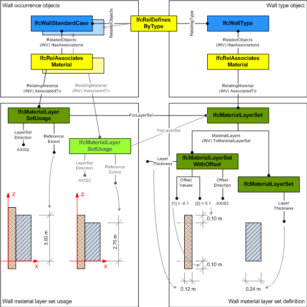

8.10.3.9 IfcMaterialLayerWithOffsets
| Couche de matériau avec décalage |
| Materialschicht mit Versätzen |
IfcMaterialLayerWithOffsets is a specialization of IfcMaterialLayer enabling definition
of offset values along edges (within the material layer set usage in parent layer set).
It defines the assignment of two offset values for a material
layer in its intended use within a material layer set. Offsets are
applied to the edges of layered elements (that is, in directions
perpendicular to the layer set direction). Offsets shall not be
used in layer set direction, that is, for modelling gaps (or overlaps)
between layers; gaps shall be modeled as layers with appropriate
material assignment for the void.
EXAMPLE At the top of a standard wall,
with shape representation SweptSolid, offset of a given layer can
be specified in the direction of the extrusion (positive Z axis),
applied at the start or end (extruded from bottom to top), and with
a positive (extending above extrusion) or negative (ending below
extrusion).
Take a standard wall with the outer material layer for the
external isolation extending above extrusion by 100mm, but starting
at the same base height. In this case the following values are
set:
- OffsetDirection = .AXIS3.
- OffsetValues[1] = 0.0
- OffsetValues[2] = 100.0 (default unit assumed to
be mm)
HISTORY New entity in IFC4.
Informal Propositions:
- The OffsetDirection shall not be identical to the LayerSetDirection of the corresponding IfcMaterialLayerSetUsage.
- The attribute ReferenceExtent shall be asserted at the corresponding IfcMaterialLayerSetUsage.
Attribute use definition
The OffsetValues and OffsetDirection correspond to the definitions ReferenceExtent and LayerSetDirection at the IfcMaterialLayerSetUsage. Figure 331 shows an example of applying the OffsetValues to the material layers of a standard wall.
 |
Figure 331 — Material layer with offsets |
XSD Specification:
<xs:element name="IfcMaterialLayerWithOffsets" type="ifc:IfcMaterialLayerWithOffsets" substitutionGroup="ifc:IfcMaterialLayer" nillable="true"/>
<xs:complexType name="IfcMaterialLayerWithOffsets">
<xs:complexContent>
<xs:extension base="ifc:IfcMaterialLayer">
<xs:attribute name="OffsetDirection" type="ifc:IfcLayerSetDirectionEnum" use="optional"/>
<xs:attribute name="OffsetValues" use="optional">
<xs:simpleType>
<xs:restriction>
<xs:simpleType>
<xs:list itemType="ifc:IfcLengthMeasure"/>
</xs:simpleType>
<xs:minLength value="2"/>
<xs:maxLength value="2"/>
</xs:restriction>
</xs:simpleType>
</xs:attribute>
</xs:extension>
</xs:complexContent>
</xs:complexType>
EXPRESS Specification:
|
ENTITY IfcMaterialLayerWithOffsets
|
 EXPRESS-G diagram
EXPRESS-G diagram
Attribute Definitions:
| OffsetDirection | : |
Orientation of the offset; shall be perpendicular to the parent layer set direction.
|
| OffsetValues | : |
The numerical value of layer offset, in the direction of the axis assigned by the attribute OffsetDirection. The OffsetValues[1] identifies the offset from the lower position along the axis direction (normally the start of the standard extrusion), the OffsetValues[2] identifies the offset from the upper position along the axis direction (normally the end of the standard extrusion).
|
Inheritance Graph:
|
ENTITY IfcMaterialLayerWithOffsets
|
 Link to this page
Link to this page